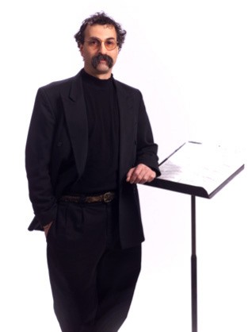

Professor Richard Falco
Richard Falco joined the music faculty of Worcester Polytechnic Institute in 1979 where he currently holds the full time position of Director of Jazz Studies. He has also served for a number of years on the jazz faculty of Clark University where he re-established their jazz program. Ensembles under Professor Falco’s direction have performed in France, Belgium, Luxembourg, Russia, Romania, the Czech Republic, Austria, Egypt, Spain, Greece, Canada, Italy, Poland and the United States. He was interviewed by "A Tout Jazz" for National Public Radio of France regarding the state of jazz education in America, and has been invited to lecture and perform at several music schools while touring abroad. He was the co-founder and Artistic Director of the Jazz Worcester Music Festival and a past president of the Jazz Worcester Society. |
 |
A member of the College of Voters for the New England Jazz Alliance (NEJA), he has presented his work in the area of jazz historical preservation for NEJA at the Hartford International Jazz Festival and the International Association for Jazz Educators' (IAJE) African American Caucus at their NYC conference. He is currently Web Presentation Coordinator for the IAJE Jazz History New England web site and a member of the Submission Review Committee for IAJE. In 1989, he was the recipient of the Henry "Boots" Mussulli Jazz Educator of the Year award. He was the 2004 recipient of the Jazz at Sunset Festival Award for “creative jazz performances of consistent excellence, artistic integrity, and the generous sharing of knowledge and understanding of music”. In April, 2006 Falco became the twelfth recipient of the prestigious Lifetime Achievement Award from the International Association for Jazz Education. With the Worcester Public Schools and Mechanics Hall Association, Professor Falco helped create the annual "Conversations in Jazz: Brown Bags for Kids" for which he was author, Narrator and Music Director. He is listed in Who's Who in America and Who's Who Among America's Teachers. Professor Falco remains a popular festival adjudicator, clinician and music lecturer. He has presented at the annual MMEA (Massachusetts Music Educators Association) All State Conference on jazz guitar, big band directing techniques and jazz improvisation, the New England Jazz Alliance (NEJA) Annual Conference on the collection and preservation of jazz historical data, the IAJE Annual International Conference in NYC for the African American Caucus. He is a frequent adjudicator for the Rhode Island Music Educators Association (RIMEA) and was invited to be the All State Jazz Ensemble Conductor for RIMEA. He has produced and presented over 50 internationally acclaimed artists on the WPI campus for clinics, workshops and concerts, including such luminaries as Dizzy Gillespie, Joe Lovano, Clark Terry, Sun Ra, Cyrus Chestnut, Marcus Roberts and many more. Major works performed by ensembles under his direction include the Duke Ellington Sacred Concerts, various suites by Duke Ellington, suites by the Buddy Rich Orchestra, Rhode Island All State Jazz Orchestra (guest conductor), Massachusetts Central District Jazz Orchestra (guest conductor) as well as several international tours. Areas of interest include historical research and data preservation related to Central Massachusetts jazz artists for internet publication. |
|
Education: M.A., Clark University, 1992 B.A., University of Massachusetts, 1989 Certificate, Music Education, Berklee College of Music, 1979 |
|